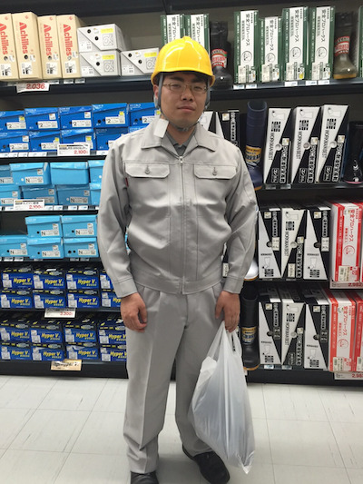

東洋ワークITエンジニア育成紹介
これから学習を始める人たちへ
エンジニア育成ってどんなことをするの？
1日のスケジュールってどうなっているの？
これからエンジニアを目指す皆さんの
不安や疑問を解消させるべく
研修1期生が紹介サイトを作成しました！
1日のスケジュールってどうなっているの？
これからエンジニアを目指す皆さんの
不安や疑問を解消させるべく
研修1期生が紹介サイトを作成しました！

現場作業員から
ITエンジニアに！
エンジニア育成について
リスキリングプログラムとは？
リスキリングとは「スキルを付け直すこと・学び直すこと」です。
2021年に経済産業省が発表した資料によると
「新しい職業に就くために、あるいは今の職業で必要とされるスキルの大幅な変化に適応するために必要なスキルを獲得する・させること」
と定義されています。
2021年に経済産業省が発表した資料によると
「新しい職業に就くために、あるいは今の職業で必要とされるスキルの大幅な変化に適応するために必要なスキルを獲得する・させること」
と定義されています。
東洋ワークのリスキリングプログラムの内容は？
→未経験者を現場で活躍するデジタル人材に変える短期集中プログラムです！
またプログラミングだけでなく、グループでのアウトプット時間や対面での学習時間によりコミュニケーションスキルも身に付きます。
またプログラミングだけでなく、グループでのアウトプット時間や対面での学習時間によりコミュニケーションスキルも身に付きます。
研修カリキュラム
研修カリキュラムの内容は？
→言語を問わず活躍できるスキルの習得を目指します！
ウェブ開発・業界で活躍できるスキルを習得します。
基礎から始まり応用、発展…と段階を踏んで進んでいくので未経験者も安心して学習に取り組めます。
ウェブ開発・業界で活躍できるスキルを習得します。
基礎から始まり応用、発展…と段階を踏んで進んでいくので未経験者も安心して学習に取り組めます。
学習項目
フロントエンド
- HTML
- CSS
- JavaScript
サーバサイド
- Ruby
- Ruby on Rails
- Rspec
- API
- SQL
- DB設計
インフラサイドGit
- Linux
- ネットワーク
- Git
- デプロイ
その他
- テストコード
- オブジェクト指向
- セキュリティ
- 正規表現
- GitHub
- サービス設計
研修カリキュラムの特徴
課題解決力が身に付く
基礎から学びつつ、見本を見ながら実際にアプリケーションを開発し学習を進めていきます。
この開発を通して「仮説を立てて検証する」経験を積むことができます。
時にはカリキュラムに載っていない技術が必要になることもあります。
そんなときは自身で調べながら実装を進めます。
この経験を通して課題解決できるエンジニアへと育っていきます。
仮説を立てて検証する習慣が身に付く
ゼロからアプリケーションの設計・開発・ソースコードを外部のサーバーにアップし、リリースまで一連の作業の経験を積みます。
学習した知識を応用して、さらに必要な技術を調べながら実装することでわからないことも仮説を立てて検証し解決する経験を積みます。
コミュニケーションスキルが身に付く
朝礼から始まり１日に複数回のミーティングで学んだことをアウトプットします。
アイスブレイクを挟んだり実装で困ったことがあれば意見をしあったり、自然とコミュニケーションスキルも身に付きます。
質問する・人に訊く力が身に付く
カリキュラム内でわからないことがあってもメンターの方々がサポートしてくれます！
仮説を立ててから質問するので要点をまとめてスムーズに質問できる力も身に付きます。
基礎から学びつつ、見本を見ながら実際にアプリケーションを開発し学習を進めていきます。
この開発を通して「仮説を立てて検証する」経験を積むことができます。
時にはカリキュラムに載っていない技術が必要になることもあります。
そんなときは自身で調べながら実装を進めます。
この経験を通して課題解決できるエンジニアへと育っていきます。
仮説を立てて検証する習慣が身に付く
ゼロからアプリケーションの設計・開発・ソースコードを外部のサーバーにアップし、リリースまで一連の作業の経験を積みます。
学習した知識を応用して、さらに必要な技術を調べながら実装することでわからないことも仮説を立てて検証し解決する経験を積みます。
コミュニケーションスキルが身に付く
朝礼から始まり１日に複数回のミーティングで学んだことをアウトプットします。
アイスブレイクを挟んだり実装で困ったことがあれば意見をしあったり、自然とコミュニケーションスキルも身に付きます。
質問する・人に訊く力が身に付く
カリキュラム内でわからないことがあってもメンターの方々がサポートしてくれます！
仮説を立ててから質問するので要点をまとめてスムーズに質問できる力も身に付きます。
研修中のサポート
分からないことはメンターに質問しよう！
メンターとは皆さんの学習に対して
ITエンジニア研修では分からないことなどをメンターにオンラインで質問することができます
「分からないが解決できる」「エラーが解決できる」「質問できる環境がある」ことで
基礎カリキュラムでは積極的にメンターに質問していきましょう。
応用、発展カリキュラムでは仮説、検証を行って質問をしていくようにしましょう。
技術的なサポートをしてくれる先生
のような存在です。ITエンジニア研修では分からないことなどをメンターにオンラインで質問することができます
「分からないが解決できる」「エラーが解決できる」「質問できる環境がある」ことで
研修に対するモチベーションを高く維持できる！
プログラムに対する理解や解釈が正しいかを確認できる！
基礎カリキュラムでは積極的にメンターに質問していきましょう。
応用、発展カリキュラムでは仮説、検証を行って質問をしていくようにしましょう。
不安があったらライフコーチに相談しよう！
ライフコーチとは、効果的な学習方法のアドバイスや学習の進捗目標の設定などの
個人の学習状況を把握しているので個人別にサポートしてくれます。
週に１回ライフコーチとの面談があるので
その時に学習に対する不安や今後について相談しましょう。
学習目標達成の為の支援をしてくれる方
です。個人の学習状況を把握しているので個人別にサポートしてくれます。
週に１回ライフコーチとの面談があるので
その時に学習に対する不安や今後について相談しましょう。